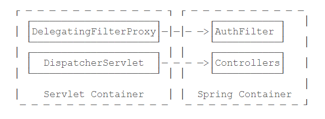
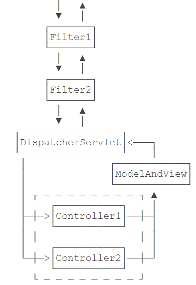
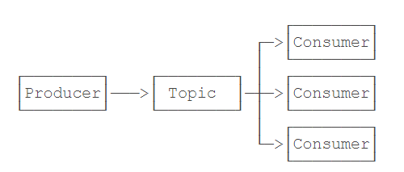

Spring
SpringDB基础JDBC事务DAOHibernateJPA MyBatisWebSpring MVCREST使用FilterInterceptorCORS国际化异步WebSocket邮件JMSSchedulerJMX
DB
基础
1，Spring简化数据库访问：
- 提供了简化的访问JDBC的模板类，不必手动释放资源；
- 提供了一个统一的DAO类以实现Data Access Object模式；
- 把
SQLException封装为DataAccessException，这个异常是一个RuntimeException，并且让我们能区分SQL异常的原因，例如，DuplicateKeyException表示违反了一个唯一约束； - 能方便地集成Hibernate、JPA和MyBatis这些数据库访问框架。
JDBC
1，首先通过IoC容器创建并管理一个DataSource实例，然后，Spring提供了一个JdbcTemplate，可以方便地让我们操作JDBC，因此，通常情况下，我们会实例化一个JdbcTemplate，通常情况下，会实例化一个JdbcTemplate，使用Template模式：父类定义骨架，子类实现某些细节，为了防止子类重写父类的骨架方法，可以在父类中对骨架方法使用final，对于需要子类实现的抽象方法，一般声明为protected，使得这些方法对外部客户端不可见。
２，JdbcTemplate只是对JDBC操作的一个简单封装，它的目的是尽量减少手动编写try(resource) {...}的代码，对于查询，主要通过RowMapper实现了JDBC结果集到Java对象的转换。
- 针对简单查询，优选
query()和queryForObject()，因为只需提供SQL语句、参数和RowMapper。如果在设计表结构的时候，能够和JavaBean的属性一一对应，那么直接使用BeanPropertyRowMapper就很方便。 - 针对更新操作，优选
update()，因为只需提供SQL语句和参数； - 任何复杂的操作，最终也可以通过
execute(ConnectionCallback)实现，因为拿到Connection就可以做任何JDBC操作。
３，创建连接
1// 创建一个DataSource实例，它的实际类型是HikariDataSource2DataSource createDataSource() {4 HikariConfig config = new HikariConfig();5 // init config6 return new HikariDataSource(config);7}8// 创建一个JdbcTemplate实例，它需要注入DataSource，这是通过方法参数完成注入的9JdbcTemplate createJdbcTemplate( DataSource dataSource) {11 return new JdbcTemplate(dataSource);12}编写示例代码或者测试代码时，推荐使用HSQLDB这个数据库，它是一个用Java编写的关系数据库，可以以内存模式或者文件模式运行。可以通过HSQLDB自带的工具来初始化数据库表，通过写一个Bean，在Spring容器启动时自动创建一个测试用数据表。
x1public class DatabaseInitializer {3 4 JdbcTemplate jdbcTemplate;5
6 7 public void init() {8 jdbcTemplate.update("DROP TABLE IF EXISTS users");9 jdbcTemplate.update("CREATE TABLE IF NOT EXISTS users (" //10 + "id BIGINT IDENTITY NOT NULL PRIMARY KEY, " //11 + "email VARCHAR(100) NOT NULL, " //12 + "password VARCHAR(100) NOT NULL, " //13 + "name VARCHAR(100) NOT NULL, " //14 + "UNIQUE (email))");15 }16}只需要在需要访问数据库的Bean中，注入JdbcTemplate即可
xxxxxxxxxx21JdbcTemplate jdbcTemplate;4，提供了一系列以回调为特点的工具方法，目的是避免繁琐的try...catch语句。
回调函数：包含运行环境，被调用的库，传入的回调函数。回调函数在被运行环境传入到库之后，由库回过头来调用。
T execute(ConnectionCallback<T> action): jdbcTemplate自动执行action方法，并将action的返回值作为jdbcTemplate.execute的结果返回。回调方法允许获取Connection，然后做任何基于Connection的操作。
xxxxxxxxxx201public User getUserById(long id) {2 // 注意传入的是ConnectionCallback:3 return jdbcTemplate.execute((Connection conn) -> {4 // 可以直接使用conn实例，不要释放它，回调结束后JdbcTemplate自动释放，:5 // 在内部手动创建的PreparedStatement、ResultSet必须用try(...)释放:6 try (var ps = conn.prepareStatement("SELECT * FROM users WHERE id = ?")) {7 ps.setObject(1, id);8 try (var rs = ps.executeQuery()) {9 if (rs.next()) {10 return new User( // new User object:11 rs.getLong("id"), // id12 rs.getString("email"), // email13 rs.getString("password"), // password14 rs.getString("name")); // name15 }16 throw new RuntimeException("user not found by id.");17 }18 }19 });20}T execute(String sql, PreparedStatementCallback<T> action)：jdbcTemplate自动执行action方法，并将action的返回值作为jdbcTemplate.execute的结果返回。
xxxxxxxxxx171public User getUserByName(String name) {2 // 需要传入SQL语句，以及PreparedStatementCallback:3 return jdbcTemplate.execute("SELECT * FROM users WHERE name = ?", (PreparedStatement ps) -> {4 // PreparedStatement实例已经由JdbcTemplate创建，并在回调后自动释放:5 ps.setObject(1, name);6 try (var rs = ps.executeQuery()) {7 if (rs.next()) {8 return new User( // new User object:9 rs.getLong("id"), // id10 rs.getString("email"), // email11 rs.getString("password"), // password12 rs.getString("name")); // name13 }14 throw new RuntimeException("user not found by id.");15 }16 });17}T queryForObject(String sql, Object[] args, RowMapper<T> rowMapper)：jdbcTemplate自动执行action方法，并将action的返回值作为jdbcTemplate.execute的结果返回。JdbcTemplate会自动创建PreparedStatement，自动填入参数，自动执行查询并返回ResultSet，需要额外提供RowMapper需要做的事情就是把ResultSet的当前行映射成一个JavaBean或者就是简单数值，可以返回任何Java对象。整个过程中，使用Connection、PreparedStatement和ResultSet都不需要我们手动管理。
xxxxxxxxxx131public User getUserByEmail(String email) {2 // 传入SQL，参数和RowMapper实例:3 return jdbcTemplate.queryForObject("SELECT * FROM users WHERE email = ?", new Object[] { email },4 (ResultSet rs, int rowNum) -> {5 // rs 为查询的结果集合，rowNum为受影响的记录数量 6 // 将ResultSet的当前行映射为一个JavaBean:7 return new User( // new User object:8 rs.getLong("id"), // id9 rs.getString("email"), // email10 rs.getString("password"), // password11 rs.getString("name")); // name12 });13}T query(String sql, Object[] args, BeanPropertyRowMapper<T> rowMapper)：jdbcTemplate自动执行action方法，并将action的返回值作为jdbcTemplate.execute的结果返回。JdbcTemplate会自动创建PreparedStatement，自动填入参数，自动执行查询并返回ResultSet，如果数据库表的结构恰好和JavaBean的属性名称一致，那么BeanPropertyRowMapper就可以直接把一行记录按列名转换为JavaBean。如果表结构和JavaBean不一致，需要稍微改写一下查询，使结果集的结构和JavaBean保持一致(SELECT office_address AS workAddress FROM users WHERE)。
xxxxxxxxxx41public List<User> getUsers(int limit) {2 return jdbcTemplate.query("SELECT * FROM users LIMIT ? ", new Object[] { limit },3 new BeanPropertyRowMapper<>(User.class));4}int update (String sql, Object ... args)：返回受影响的行数。
xxxxxxxxxx61public void updateUser(User user) {2 // 传入SQL，SQL参数，返回更新的行数:3 if (1 != jdbcTemplate.update("UPDATE user SET name = ? WHERE id=?", user.getName(), user.getId())) {4 throw new RuntimeException("User not found by id");5 }6}事务
1，Spring提供了一个PlatformTransactionManager来表示事务管理器，所有的事务都由它负责管理。而事务由TransactionStatus表示。
2，使用声明式事务
xxxxxxxxxx111 // 启用声明式4("jdbc.properties")5public class AppConfig {6 ...7 8 PlatformTransactionManager createTxManager( DataSource dataSource) {9 return new DataSourceTransactionManager(dataSource);10 }11}对需要事务支持的方法，加一个@Transactional注解；或者直接在Bean的class处加上@Transactional注解，表示所有public方法都具有事务支持。底层实现原理是AOP代理，即通过自动创建Bean的Proxy实现，自动加上try-catch-final和rollback。
3，回滚事务
默认情况下，在一个事务方法中，如果发生了RuntimeException，Spring的声明式事务将自动回滚。如果程序判断需要回滚事务，只需抛出RuntimeException。
如果要针对Checked Exception回滚事务，需要在方法或者类上的@Transactional注解中写出来：@Transactional(rollbackFor = {RuntimeException.class, IOException.class}),表示在抛出RuntimeException或IOException时，事务将回滚。
为了简化代码，建议业务异常体系从RuntimeException派生，这样就不必声明任何特殊异常，只需要正常抛出业务异常即可让Spring的声明式事务正常回滚。
4，事务边界
单个事务方法的事务边界就是方法开始和结束。
Spring的声明式事务为事务传播定义了几个级别：
- 默认传播级
REQUIRED：如果当前没有事务，就创建一个新事务，如果当前有事务，就加入到当前事务中执行。因此如果事务方法A内部调用了事务方法B，方法B不会创建新的事务，B会自动加入方法A创建的事务中，全程只有一个事务，并且范围就是A方法。 SUPPORTS：表示如果有事务，就加入到当前事务，如果没有，那也不开启事务执行。这种传播级别可用于查询方法，因为SELECT语句既可以在事务内执行，也可以不需要事务；REQUIRES_NEW：表示不管当前有没有事务，都必须开启一个新的事务执行。如果当前已经有事务，那么当前事务会挂起，等新事务完成后，再恢复执行；
定义事务的传播级别也是写在@Transactional注解里的：@Transactional(propagation = Propagation.REQUIRES_NEW)
事务传播的底层实现是Spring把JDBC相关的Connection和TransactionStatus实例绑定到ThreadLocal。如果一个事务方法从ThreadLocal未取到事务，那么它会打开一个新的JDBC连接，同时开启一个新的事务，否则，它就直接使用从ThreadLocal获取的JDBC连接以及TransactionStatus。因此，事务能正确传播的前提是方法调用是在一个线程内，事务只能在当前线程传播，无法跨线程传播。
DAO
1，Web层调用业务层，业务层调用数据访问层。业务层负责处理各种业务逻辑，而数据访问层只负责对数据进行增删改查。Spring提供JdbcDaoSupport`类，用于简化DAO的实现。
DAO模式就是一个简单的数据访问模式，是否使用DAO，根据实际情况决定，很多时候直接在Service层操作数据库也是完全没有问题的。
xxxxxxxxxx161public abstract class JdbcDaoSupport extends DaoSupport {2
3 private JdbcTemplate jdbcTemplate;4
5 public final void setJdbcTemplate(JdbcTemplate jdbcTemplate) {6 this.jdbcTemplate = jdbcTemplate;7 initTemplateConfig();8 }9
10 public final JdbcTemplate getJdbcTemplate() {11 return this.jdbcTemplate;12 }13
14 ...15}16
JdbcDaoSupport中jdbcTemplate未标注@Autowired，子类要手动注入JdbcTemplate，可以编写一个AbstractDao专门负责注入JdbcTemplate
xxxxxxxxxx91public abstract class AbstractDao extends JdbcDaoSupport {2 3 private JdbcTemplate jdbcTemplate;4
5 6 public void init() {7 super.setJdbcTemplate(jdbcTemplate);8 }9}子类可以直接调用getJdbcTemplate()
xxxxxxxxxx221public class UserDao extends AbstractDao {4 public User getById(long id) {5 return getJdbcTemplate().queryForObject(6 "SELECT * FROM users WHERE id = ?",7 new BeanPropertyRowMapper<>(User.class),8 id9 );10 }11 User createUser(User user) {12 ...13 }14
15 User updateUser(User user) {16 ...17 }18
19 void deleteUser(User user) {20 ...21 }22}Hibernate
1，把关系数据库的表记录映射为Java对象的过程就是ORM：Object-Relational Mapping。ORM既可以把记录转换成Java对象，也可以把Java对象转换为行记录。
2，创建一个LocalSessionFactoryBean
xxxxxxxxxx281LocalSessionFactoryBean createSessionFactory( DataSource dataSource) {3 var props = new Properties();4 // 表示自动创建数据库的表结构，注意不要在生产环境中启用；5 props.setProperty("hibernate.hbm2ddl.auto", "update");6 // 指示Hibernate使用的数据库是HSQLDB。Hibernate使用一种HQL的查询语句，它和SQL类似，但真正在“翻译”成SQL时，会根据设定的数据库“方言”来生成针对数据库优化的SQL；7 props.setProperty("hibernate.dialect", "org.hibernate.dialect.HSQLDialect");8 // 让Hibernate打印执行的SQL，这对于调试非常有用，我们可以方便地看到Hibernate生成的SQL语句是否符合我们的预期。9 props.setProperty("hibernate.show_sql", "true");10 var sessionFactoryBean = new LocalSessionFactoryBean();11 sessionFactoryBean.setDataSource(dataSource);12 // 指示Hibernate扫描这个包下面的所有Java类，自动找出能映射为数据库表记录的JavaBean13 sessionFactoryBean.setPackagesToScan("com.itranswarp.learnjava.entity");14 sessionFactoryBean.setHibernateProperties(props);15 return sessionFactoryBean;16}17
18// s数据库工具类，可以简化数据库操作。20HibernateTemplate createHibernateTemplate( SessionFactory sessionFactory) {21 return new HibernateTemplate(sessionFactory);22}23
24// 配合Hibernate使用声明式事务26PlatformTransactionManager createTxManager( SessionFactory sessionFactory) {27 return new HibernateTransactionManager(sessionFactory);28}LocalSessionFactoryBean是一个FactoryBean，它会再自动创建一个SessionFactory，在Hibernate中，Session是封装了一个JDBC Connection的实例，而SessionFactory是封装了JDBC DataSource的实例，即SessionFactory持有连接池，每次需要操作数据库的时候，SessionFactory创建一个新的Session，相当于从连接池获取到一个新的Connection。
3，如果一个JavaBean被用于映射，就标记一个@Entity告诉Hibernate如何把JavaBean映射到表记录
xxxxxxxxxx921// 表示它用于继承2public abstract class AbstractEntity {4 private Long id;5 private Long createdAt;6 // 主键需要用@Id标识，自增主键再追加一个@GeneratedValue以便Hibernate能读取到自增主键的值7 8 (strategy = GenerationType.IDENTITY)9 // 每个属性到数据库列的映射用@Column()标识,nullable指示列是否允许为NULL，updatable指示该列是否允许被用在UPDATE语句，length指示String类型的列的长度（如果没有指定，默认是255）10 (nullable = false, updatable = false)11 // 作为映射使用的JavaBean，所有属性都使用包装类型而不是基本类型。12 // 包装类未指定类型为null，Hibernate能识别出来该值未指定；基本类型未指定使用默认值0，此时Hibernate无法确定这个0是用户指定的，还是未指定的默认值。13 public Long getId() {14 return id;15 }16
17 public void setId(Long id) {18 this.id = id;19 }20
21 (nullable = false, updatable = false)22 public Long getCreatedAt() {23 return createdAt;24 }25
26 public void setCreatedAt(Long createdAt) {27 this.createdAt = createdAt;28 }29
30 // 返回一个虚拟的属性,CreatedDateTime是计算得出的属性，而不是从数据库表读出的值，31 // 需要标注@Transient，否则Hibernate会尝试从数据库读取名为createdDateTime这个不存在的字段从而出错。32 33 public ZonedDateTime getCreatedDateTime() {34 // 依据从数据库中读取的createdAt属性创建onedDateTime35 return Instant.ofEpochMilli(this.createdAt).atZone(ZoneId.systemDefault());36 }37
38 // 表示在将一个JavaBean持久化到数据库之前（即执行INSERT语句），Hibernate会先执行该方法39 40 public void preInsert() {41 setCreatedAt(System.currentTimeMillis());42 }43}44
45
46((name = "login", query = "SELECT u FROM User u WHERE u.email=?0 AND u.password=?1"))47// 默认情况下，映射的表名是JavaBean名称的小写，如果实际的表名不同，可以追加一个@Table(name="tablename")49(name="users")50public class User extends AbstractEntity {51
52 private String email;53 private String password;54 private String name;55
56 public User() {57 }58
59 public User(long id, String email, String password, String name) {60 setId(id);61 setEmail(email);62 setPassword(password);63 setName(name);64 }65
66 (nullable = false, unique = true, length = 100)67 public String getEmail() {68 return email;69 }70
71 public void setEmail(String email) {72 this.email = email;73 }74
75 (nullable = false, length = 100)76 public String getPassword() {77 return password;78 }79
80 public void setPassword(String password) {81 this.password = password;82 }83
84 (nullable = false, length = 100)85 public String getName() {86 return name;87 }88
89 public void setName(String name) {90 this.name = name;91 }92}数据操作直接对JavaBean操作即可，Hibernate自动读写数据库。
xxxxxxxxxx741public class UserService {4 5 HibernateTemplate hibernateTemplate;6 void func(){7 //持久化一个User实例，我们只需调用save()方法8 User user = new User();9 // 设置好各个属性:10 user.setEmail(email);11 user.setPassword(password);12 user.setName(name);13 // 保存到数据库:14 hibernateTemplate.save(user);15 // Hibernate插入数据后自动获取到自增属性，自动保存到JavaBean实例中。16 long id=user.getId();17
18 // 通过主键获取用户19 // load()和get()都可以根据主键加载记录，它们的区别在于，当记录不存在时，get()返回null，而load()抛出异常。20 User user = hibernateTemplate.get(User.class, id);21
22 // 条件查询获取用户23 // 使用findByExample()，给出一个User实例，Hibernate把该实例所有非null的属性拼成WHERE条件(属性必须使用包装类，如果使用基本类型就存在默认值，额外增加了一个使用默认值的匹配条件，使用findByExample()时，注意基本类型字段总是会加入到WHERE条件)24 User example = new User();25 example.setEmail(email);26 example.setPassword(password);27 // 等价于根据给定email和password查询用户： SELECT * FROM user WHERE email = ? AND password = ?28 List<User> list = hibernateTemplate.findByExample(example);29
30 // 条件查询获取用户31 // 使用Criteria查询，使用链式语句来添加多个AND,OR 条件，更灵活（add等价于and,连接多个平级条件)32 // (email = ? OR name = ?) AND password = ?33 // criteria.add(34 // Restrictions.and(35 // Restrictions.or(36 // Restrictions.eq("email", email),37 // Restrictions.eq("name", email)38 // ),39 // Restrictions.eq("password", password)40 // )41 DetachedCriteria criteria = DetachedCriteria.forClass(User.class);42 criteria.add(Restrictions.eq("email", email)).add(Restrictions.eq("password", password));43 List<User> list = (List<User>) hibernateTemplate.findByCriteria(criteria);44
45 // 条件查询获取用户46 // 直接编写Hibernate内置的HQL查询。47 // HQL使用类名和属性名，由Hibernate自动转换为实际的表名和列名。48 List<User> list = (List<User>) hibernateTemplate.find("FROM User WHERE email=? AND password=?", email, password);49 50 // 条件查询获取用户51 // NamedQuery52 // 名称为login的查询语句保存在JavaBean类开头的注解中注解中,,可以在User类统一管理所有相关查询53 // @NamedQueries(54 // @NamedQuery(55 // // 查询名称:56 // name = "login",57 // // 查询语句:占位符使用?0、?158 // query = "SELECT u FROM User u WHERE u.email=?0 AND u.password=?1"59 // )60 //)61 //@Entity62 //public class User extends AbstractEntity {...}63 List<User> list = (List<User>) hibernateTemplate.findByNamedQuery("login", email, password);64
65 // 删除用户，通过主键删除记录时，一个常见的用法是先根据主键加载该记录，再删除66 hibernateTemplate.delete(user);67
68 // 更新记录相当于先更新User的指定属性，然后调用update()方法.69 // Hibernate在更新记录时，只会把@Column(updatable=true)的属性加入到UPDATE语句中,如果修改了标记为禁止修改的属性，并不会更新对应的数据库列，提供一层额外的安全性。70 // 这个功能是Hibernate提供的，如果绕过Hibernate直接通过JDBC执行UPDATE语句仍然可以更新数据库的任意列的值。71 user.setName(name);72 hibernateTemplate.update(user);73 }74}JPA
1，Java Persistence API是JavaEE的一个ORM标准，JPA只是接口，Spring内置了JPA的集成，还需要选择一个实现产品：Hibernate或EclipseLink
2，使用
先创建一个LocalContainerEntityManagerFactoryBean，并让它再自动创建一个EntityManagerFactory
DBC、Hibernate和JPA提供的接口关系如下：
| JDBC | Hibernate | JPA |
|---|---|---|
| DataSource | SessionFactory | EntityManagerFactory |
| Connection | Session | EntityManager |
xxxxxxxxxx241// 创建LocalContainerEntityManagerFactoryBean，实现数据库连接2LocalContainerEntityManagerFactoryBean createEntityManagerFactory( DataSource dataSource) {4 var entityManagerFactoryBean = new LocalContainerEntityManagerFactoryBean();5 // 设置DataSource:6 entityManagerFactoryBean.setDataSource(dataSource);7 // 扫描指定的package获取所有entity class:8 entityManagerFactoryBean.setPackagesToScan("org.huangqiang.entity");9 // 指定JPA的提供商是Hibernate:10 JpaVendorAdapter vendorAdapter = new HibernateJpaVendorAdapter();11 entityManagerFactoryBean.setJpaVendorAdapter(vendorAdapter);12 // 设定特定提供商自己的配置:13 var props = new Properties();14 props.setProperty("hibernate.hbm2ddl.auto", "update");15 props.setProperty("hibernate.dialect", "org.hibernate.dialect.HSQLDialect");16 props.setProperty("hibernate.show_sql", "true");17 entityManagerFactoryBean.setJpaProperties(props);18 return entityManagerFactoryBean;19}20// 声明式事务21PlatformTransactionManager createTxManager( EntityManagerFactory entityManagerFactory) {23 return new JpaTransactionManager(entityManagerFactory);24}使用Spring+Hibernate作为JPA实现，无需任何配置文件。
xxxxxxxxxx361public class UserService {4 // 在需要使用JPA接口的地方注入一个EntityManager，相当于注入数据库连接。5 // 实际上这里注入的并不是真正的EntityManager(数据库连接），而是一个EntityManager的代理类，避免了同一个连接被多个线程共享。Spring遇到标注了@PersistenceContext的EntityManager会自动注入代理，该代理会在必要的时候自动打开EntityManager。多线程引用的EntityManager虽然是同一个代理类，但该代理类内部针对不同线程会创建不同的EntityManager实例。所以标注了@PersistenceContext的EntityManager可以被多线程安全地共享。6 // public class EntityManagerProxy implements EntityManager {7 // private EntityManagerFactory emf;8 // }9 10 EntityManager em;11 void func(){12 // 主键查询13 User user = this.em.find(User.class, id);14 // JPQL查询条件查询15 // JPQL查询:使用类名和属性名，由Hibernate自动转换为实际的表名和列名。使用 :x 作为占位符16 TypedQuery<User> query = em.createQuery("SELECT u FROM User u WHERE u.email = :e", User.class);17 query.setParameter("e", email);18 List<User> list = query.getResultList();19 // NamedQuery条件查询20 // NamedQuery通过注解标注在JavaBean类上21 // @NamedQueries(22 // @NamedQuery(23 // name = "login",24 // query = "SELECT u FROM User u WHERE u.email=:e AND u.password=:p"25 // )26 // )27 // @Entity28 // public class User extends AbstractEntity {...}29 TypedQuery<User> query = em.createNamedQuery("login", User.class);30 query.setParameter("e", email);31 query.setParameter("p", password);32 List<User> list = query.getResultList();33 34 // 对数据库进行增删改的操作，可以分别使用em.persist(user)、em.remove(user)和em.merge(user)方法35 }36}MyBatis
1，ORM主要工作就是依据在Java Bean的属性上的注解，把ResultSet的每一行变成Java Bean，或者把Java Bean自动转换到INSERT或UPDATE语句的参数中。
2，全自动ORM框架：使用Proxy模式跟踪Java Bean的修改，以便在update()操作中更新必要的属性。从ORM框架读取的User实例实际上并不是User类，而是代理类，代理类继承自User类，但针对每个setter方法做了覆写，代理类可以跟踪到每个属性的变化：
xxxxxxxxxx181public class UserProxy extends User {2 boolean _isNameChanged;3
4 public void setName(String name) {5 super.setName(name);6 _isNameChanged = true;7 }8 // 代理类可以直接通过getter方法查询数据库9 // 为了实现这样的查询，UserProxy必须保存Hibernate的当前Session。但是，当事务提交后，Session自动关闭，此时再获取getAddress()将无法访问数据库，或者获取的不是事务一致的数据。因此，ORM框架总是引入了Attached/Detached状态，表示当前此Java Bean到底是在Session的范围内，还是脱离了Session变成了一个“游离”对象,这种隐式状态使得普通Java Bean的生命周期变得复杂。10 // Hibernate和JPA为了实现兼容多种数据库，它使用HQL或JPQL查询，经过一道转换，变成特定数据库的SQL，理论上这样可以做到无缝切换数据库，但这一层自动转换除了少许的性能开销外，给SQL级别的优化带来了麻烦。11 // ORM框架通常提供了缓存，并且还分为一级缓存和二级缓存。缓存极大的增加了数据的不一致性，原因在于数据库通常会支持多个应用程序，常常会导致意外的更新。12 public Address getAddress() {13 Query q = _session.createQuery("from Address where userId = :userId");14 q.setParameter("userId", this.getId());15 List<Address> list = query.list();16 return list.isEmpty() ? null : list(0);17 }18}手动JDBC：Spring提供的JdbcTemplate，它和ORM框架相比差别：查询后需要手动提供Mapper实例以便把ResultSet的每一行变为Java对象；增删改操作所需的参数列表，需要手动传入，比较麻烦。JdbcTemplate的优势在于它的确定性：即每次读取操作一定是数据库操作而不是缓存，所执行的SQL是完全确定的，缺点就是代码比较繁琐。使用MyBatis最大的问题是所有SQL都需要全部手写，优点是执行的SQL就是我们自己写的SQL，对SQL进行优化非常简单，也可以编写任意复杂的SQL，或者使用数据库的特定语法，但切换数据库可能就不太容易。
半自动的ORM：只负责把ResultSet自动映射到Java Bean，或者自动填充Java Bean参数，但仍需自己写出SQL。
3，MyBatis使用
使用MyBatis的核心就是创建SqlSessionFactory
| JDBC | Hibernate | JPA | MyBatis |
|---|---|---|---|
| DataSource | SessionFactory | EntityManagerFactory | SqlSessionFactory |
| Connection | Session | EntityManager | SqlSession |
xxxxxxxxxx121// 创建SqlSessionFactoryBean2SqlSessionFactoryBean createSqlSessionFactoryBean( DataSource dataSource) {4 var sqlSessionFactoryBean = new SqlSessionFactoryBean();5 sqlSessionFactoryBean.setDataSource(dataSource);6 return sqlSessionFactoryBean;7}8// 事务管理9PlatformTransactionManager createTxManager( DataSource dataSource) {11 return new DataSourceTransactionManager(dataSource);12}MyBatis使用Mapper来实现映射，而且Mapper必须是接口。这里的Mapper不是JdbcTemplate的RowMapper的概念，它是定义访问数据库表的接口方法。查询方法不仅要定义接口方法本身，还要明确写出查询的SQL，用注解@Select标记。SQL语句的任何参数，都与方法参数按名称对应。
xxxxxxxxxx211public interface UserMapper {2 // 方法参数id的名字通过注解@Param()标记为id，则SQL语句里将来替换的占位符就是#{id}。如果有多个参数，那么每个参数命名后直接在SQL中写出对应的占位符即可3 // MyBatis执行查询后，将根据方法的返回类型自动把ResultSet的每一行转换为User实例，转换规按列名和属性名对应。如果列名和属性名不同，最简单的方式是编写SELECT语句的别名:created_time AS createdAt4 ("SELECT * FROM users WHERE id = #{id}")5 User getById(("id") long id);6 7 ("SELECT * FROM users LIMIT #{offset}, #{maxResults}")8 List<User> getAll(("offset") int offset, ("maxResults") int maxResults);9 10 // 方法传入的参数名称是user，参数类型是User类，在SQL中引用的时候，以#{obj.property}的方式写占位符。MyBatis必须写出完整的INSERT语句。11 // 获取插入后的自增主键，keyProperty和keyColumn分别指出JavaBean的属性和数据库的主键列名12 (useGeneratedKeys = true, keyProperty = "id", keyColumn = "id")13 ("INSERT INTO users (email, password, name, createdAt) VALUES (#{user.email}, #{user.password}, #{user.name}, #{user.createdAt})")14 void insert(("user") User user);15 16 ("UPDATE users SET name = #{user.name}, createdAt = #{user.createdAt} WHERE id = #{user.id}")17 void update(("user") User user);18
19 ("DELETE FROM users WHERE id = #{id}")20 void deleteById(("id") long id);21}Mapper接口，还需要对应的实现类才能真正执行这些数据库操作的方法，MapperFactoryBean来自动创建所有Mapper的实现类。就可以让MyBatis自动扫描指定包的所有Mapper并创建实现类。在真正的业务逻辑中，可以直接注入。业务逻辑主要就是通过XxxMapper定义的数据库方法来访问数据库。
xxxxxxxxxx181// 通过@MapperScan，MyBatis在启动时自动给每个Mapper接口创建如下Bean:2// @Component3// public class UserMapperImpl implements UserMapper {4// // 使用到之前创建的SqlSessionFactoryBean5// @Autowired6// SqlSessionFactory sessionFactory;7
8// public List<User> getAllUsers() {9// String sql = getSqlFromAnnotation(...);10// try (SqlSession session = sessionFactory.createSession()) {11// ...12// }13// }14// }15("org.huangqiang.mapper")16public class AppConfig {17 ...18}xxxxxxxxxx121public class UserService {4 // 注入UserMapper:5 6 UserMapper userMapper;7 public User getUserById(long id) {8 // 调用Mapper方法:9 User user = userMapper.getById(id);10 return user;11 }12}4，Hibernate，MyBatis，JPA区别
JPA：JavaEE提供的ORM API，实现ORM必须引入第三方ORM框架(Hibernate或EclipseLink,不能将MyBatis作为底层实现)进行具体实现。
Hibernate：全自动ORM。在JavaBean类中将字段与表字段进行显式映射，封装了完整的对象关系映射机制。开发者操作的是JavaBean类中的字段，而不是数据表中的字段，通过HQL完成两者之间的自动转换，程序员可以使用对象编程思维来操纵数据库。Hibernate对各个主流RDB都有支持，理论上可以无缝切换，有较好的数据库移植性。在Spring中，JPA可以将Hibernate作为底层实现，也可以直接集成Hibernate，不经过JPA。
Mybatis：半自动ORM。在JavaBean类中不会将字段与数据表的字段进行显式映射。需要在另外的地方定义数据表的字段类型，如length, isnull等。还需要定义Mapper接口，实现方法与SQL语句的映射关系。开发者直接操作数据表的字段，将sql的入参和查询结果映射成POJOs，面向于ResultMap的映射。如果JavaBean中字段名与数据库字段名不一致，需要手动加as语句，相较于Hibernate需要维护SQL和查询结果集的映射,而且数据库的移植性较差,针对不同的数据库编写不同的SQL。 但是可以进行更细致的SQL优化,查询必要的字段。
Web
Spring MVC
1，标准的Servlet组件：
- Servlet：能处理HTTP请求并将HTTP响应返回；
- JSP：一种嵌套Java代码的HTML，将被编译为Servlet；
- Filter：能过滤指定的URL以实现拦截功能；
- Listener：监听指定的事件，如ServletContext、HttpSession的创建和销毁。
此外，Servlet容器为每个Web应用程序自动创建一个唯一的ServletContext实例，这个实例就代表了Web应用程序本身。
2，Spring提供IoC容器，所有的Bean，Component，包括Controller，都在Spring IoC容器中被初始化，而Servlet容器由JavaEE服务器提供（如Tomcat），Servlet容器对Spring一无所知。普通的Java应用程序中可以通过main()方法可以很简单地创建一个Spring容器的实例；而Web应用程序总是由Servlet容器创建，在Web应用中启动Spring容器有很多种方法，可以通过Listener启动，也可以通过Servlet启动，可以使用XML配置，也可以使用注解配置。
最简单的启动方式：在web.xml中配置Spring MVC提供的DispatcherServlet。Servlet容器会首先初始化Spring MVC的DispatcherServlet，在DispatcherServlet启动时，它根据配置AppConfig创建了一个类型是WebApplicationContext的IoC容器，完成所有Bean的初始化，并将容器绑到ServletContext上。
因为DispatcherServlet持有IoC容器，能从IoC容器中获取所有@Controller的Bean，因此，DispatcherServlet接收到所有HTTP请求后，根据Controller方法配置的路径，就可以正确地把请求转发到指定方法，并根据返回的ModelAndView决定如何渲染页面。
xxxxxxxxxx261<web-app>2 <display-name>Archetype Created Web Application</display-name>3
4 <servlet>5 <servlet-name>dispatcher</servlet-name>6 <servlet-class>org.springframework.web.servlet.DispatcherServlet</servlet-class>7 <init-param>8 <!--初始化参数contextClass指定使用注解配置的AnnotationConfigWebApplicationContext-->9 <param-name>contextClass</param-name>10 <param-value>org.springframework.web.context.support.AnnotationConfigWebApplicationContext</param-value>11 </init-param>12 <init-param>13 <!--配置文件的位置参数contextConfigLocation指向AppConfig的完整类名-->14 <param-name>contextConfigLocation</param-name>15 <param-value>org.huangqiang.AppConfig</param-value>16 </init-param>17 <load-on-startup>0</load-on-startup>18 </servlet>19
20 <servlet-mapping>21 <!--把这个Servlet映射到/*，即处理所有URL-->22 <servlet-name>dispatcher</servlet-name>23 <url-pattern>/*</url-pattern>24 </servlet-mapping>25</web-app>26
3，Maven Web工程目录结构如下：
xxxxxxxxxx321spring-web-mvc2├── pom.xml3└── src4 └── main5 ├── java6 │ └── org7 │ └── learnjava8 │ ├── AppConfig.java9 │ ├── DatabaseInitializer.java10 │ ├── entity11 │ │ └── User.java12 │ ├── service13 │ │ └── UserService.java14 │ └── web15 │ └── UserController.java16 ├── resources17 │ ├── jdbc.properties18 │ └── logback.xml19 └── webapp20 ├── WEB-INF21 │ ├── templates22 │ │ ├── _base.html23 │ │ ├── index.html24 │ │ ├── profile.html25 │ │ ├── register.html26 │ │ └── signin.html27 │ └── web.xml28 └── static29 ├── css30 │ └── bootstrap.css31 └── js32 └── jquery.jssrc/main/webapp是标准web目录，WEB-INF存放web.xml，编译的class，第三方jar，以及不允许浏览器直接访问的View模版，static目录存放所有静态文件。在src/main/resources目录中存放的是Java程序读取的classpath资源文件
4，编写正常的AppConfig后，只需加上@EnableWebMvc注解，就“激活”了Spring MVC
xxxxxxxxxx471 // 启用Spring MVC4("classpath:/jdbc.properties")6public class AppConfig {7 // 创建用于Spring MVC的Bean8 9 WebMvcConfigurer createWebMvcConfigurer() {10 return new WebMvcConfigurer() {11 // 让Spring MVC自动处理静态文件，并且映射路径为/static/**。12 13 public void addResourceHandlers(ResourceHandlerRegistry registry) {14 registry.addResourceHandler("/static/**").addResourceLocations("/static/");15 }16 };17 }18 // 创建模板引擎19 20 ViewResolver createViewResolver( ServletContext servletContext) {21 // 指定模板引擎22 PebbleEngine engine = new PebbleEngine.Builder().autoEscaping(true)23 .cacheActive(false)24 .loader(new ServletLoader(servletContext))25 .extension(new SpringExtension())26 .build();27 PebbleViewResolver viewResolver = new PebbleViewResolver();28 // ViewResolver通过指定prefix和suffix来确定如何查找View,此处指定模板文件存放在/WEB-INF/templates/目录下29 viewResolver.setPrefix("/WEB-INF/templates/");30 viewResolver.setSuffix("");31 viewResolver.setPebbleEngine(engine);32 return viewResolver;33 }34 // 启动嵌入式Tomcat,Servlet容器会首先初始化Spring MVC的DispatcherServlet，在DispatcherServlet启动时，它根据配置AppConfig创建了一个类型是WebApplicationContext的IoC容器，完成所有Bean的初始化，并将容器绑到ServletContext上。35 public static void main(String[] args) throws Exception {36 Tomcat tomcat = new Tomcat();37 tomcat.setPort(Integer.getInteger("port", 8080));38 tomcat.getConnector();39 Context ctx = tomcat.addWebapp("", new File("src/main/webapp").getAbsolutePath());40 WebResourceRoot resources = new StandardRoot(ctx);41 resources.addPreResources(42 new DirResourceSet(resources, "/WEB-INF/classes", new File("target/classes").getAbsolutePath(), "/"));43 ctx.setResources(resources);44 tomcat.start();45 tomcat.getServer().await();46}47}5，普通的Bean都是普通的@Component，但Controller虽然也是Bean但是必须标记为@Controller。Spring MVC对Controller没有固定的要求，也不需要实现特定的接口，但要求总是标记@Controller而不是@Component
xxxxxxxxxx361// Controller使用@Controller标记而不是@Component:2// 对URL进行分组，每组对应一个Controller是一种很好的组织形式，并可以在Controller的class定义出添加URL前缀和后缀，可以有效避免不小心导致的重复的URL映射。4("/user")5public class UserController {6 // 正常使用@Autowired注入:7 8 UserService userService;9
10 // 处理一个URL映射:一个方法对应一个HTTP请求路径，用@GetMapping或@PostMapping表示GET或POST请求。11 // 需要接收的HTTP参数以@RequestParam()标注，可以设置默认值。如果方法参数需要传入HttpServletRequest、HttpServletResponse或者HttpSession，直接添加这个类型的参数即可，Spring MVC会自动按类型传入。12 // 添加前缀和后缀后注意实际URL映射是/user//signin13 ("/signin")14 public ModelAndView doSignin(15 ("email") String email,16 ("password") String password,17 HttpSession session) {18 ...19 // 返回的ModelAndView通常包含View的路径和一个Map作为Model，20 return new ModelAndView("xxx.html", model);21 // 返回的ModelAndView也可以没有Model如登录页面:22 return new ModelAndView("signin.html")。23 // 返回重定向时既可以写24 new ModelAndView("redirect:/signin")，25 // 返回重定向时也可以直接返回26 String:return "redirect:/signin";27 // 在方法内部直接操作HttpServletResponse发送响应，返回null表示无需进一步处理28 response.setContentType("application/octet-stream");29 OutputStream output = response.getOutputStream();30 output.write(data);31 output.flush();32 return null;33 34 }35 ...36}6，使用Spring MVC时，整个Web应用程序按如下顺序启动：
- 启动Tomcat服务器；
- Tomcat读取web.xml并初始化DispatcherServlet；
- DispatcherServlet创建IoC容器并自动注册到ServletContext中。
启动后，浏览器发出的HTTP请求全部由DispatcherServlet接收，并根据配置转发到指定Controller的指定方法处理。
REST
1，REST：通常输入输出都是JSON，便于第三方调用或者使用页面JavaScript与之交互。
REST：看Url就知道要什么；看http method就知道干什么；看http status code就知道结果如何。
2，在Controller中处理JSON
加入Jackson依赖：com.fasterxml.jackson.core:jackson-databind:2.11.0
xxxxxxxxxx101// 使用consumes声明能接收的类型，使用produces声明输出的类型。2(value = "/rest",3 consumes = "application/json;charset=UTF-8",4 produces = "application/json;charset=UTF-8")5// @ResponseBody表示返回的String无需额外处理，直接作为输出内容写入HttpServletResponse。6// 输入的JSON则根据注解@RequestBody直接被Spring反序列化为User这个JavaBean。8public String rest( User user) {9 return "{\"restSupport\":true}";10}3，Spring额外提供了一个@RestController注解，使用@RestController替代@Controller后，每个方法自动变成API接口方法。自动接收Json输入并根据参类型序列化，自动反序列化并直接输出到HttpServletResponse。要求输入和输出要能被Jackson序列化或反序列化为JSON
xxxxxxxxxx311("/api")3public class ApiController {4 5 UserService userService;6
7 ("/users")8 public List<User> users() {9 return userService.getUsers();10 }11
12 ("/users/{id}")13 public User user(("id") long id) {14 return userService.getUserById(id);15 }16
17 ("/signin")18 public Map<String, Object> signin( SignInRequest signinRequest) {19 try {20 User user = userService.signin(signinRequest.email, signinRequest.password);21 return Map.of("user", user);22 } catch (Exception e) {23 return Map.of("error", "SIGNIN_FAILED", "message", e.getMessage());24 }25 }26 // 内部类：非static类隐式地引用了主类实例，不能独立于主类使用。27 public static class SignInRequest {28 public String email;29 public String password;30 }31}是直接在User的password属性定义处加上@JsonIgnore表示完全忽略该属性：
xxxxxxxxxx121public class User {2 ...3
4 // 禁用password属性，不可读：不能将password属性通过序列化写入json返回；不可写：不能通过用户传入的参数反序列化User对象时初始化password属性。。5 (access = Access.WRITE_ONLY) //允许输入，不允许输出6 (access = Access.READ_ONLY) //允许输出，不允许输入7 public String getPassword() {8 return password;9 }10
11 ...12}使用Filter
1，通过指定过滤的URL，拦截指定URL，对HttpServletRequest和HttpServletResponse处理后传递请求给 DispatcherServlet，用于后续处理。可以把很多公共预处理逻辑放到Filter中完成。
2，引入CharacterEncodingFilter处理中文输入,CharacterEncodingFilter其实和Spring的IoC容器没有任何关系，两者均互不知晓对方的存在。
web.xml
xxxxxxxxxx211<web-app>2 <!--处理文本编码-->3 <filter>4 <filter-name>encodingFilter</filter-name>5 <filter-class>org.springframework.web.filter.CharacterEncodingFilter</filter-class>6 <init-param>7 <param-name>encoding</param-name>8 <param-value>UTF-8</param-value>9 </init-param>10 <init-param>11 <param-name>forceEncoding</param-name>12 <param-value>true</param-value>13 </init-param>14 </filter>15 <!-- 所有的请求都要经过这个Filter-->16 <filter-mapping>17 <filter-name>encodingFilter</filter-name>18 <url-pattern>/*</url-pattern>19 </filter-mapping>20 ...21</web-app>3，对于使用Spring组件的Filter，如果在Spring中创建的这个Filter是一个普通Bean，Servlet容器并不知道，所以它不会起作用。如果直接在web.xml中声明这个Filter，Filter的实例将由Servlet容器而不是Spring容器初始化，Spring不知道该实例的存在，@Autowire根本不生效。
DelegatingFilterProxy可以让Servlet容器实例化的Filter，间接引用Spring容器实例化的AuthFilter，本质上IOC容器持有此组件。
xxxxxxxxxx231public class AuthFilter implements Filter {3 4 UserService userService;5
6 public void doFilter(ServletRequest request, ServletResponse response, FilterChain chain)7 throws IOException, ServletException {8 HttpServletRequest req = (HttpServletRequest) request;9 // 获取Authorization头:10 String authHeader = req.getHeader("Authorization");11 if (authHeader != null && authHeader.startsWith("Basic ")) {12 // 从Header中提取email和password:13 String email = prefixFrom(authHeader);14 String password = suffixFrom(authHeader);15 // 登录:16 User user = userService.signin(email, password);17 // 放入Session:18 req.getSession().setAttribute(UserController.KEY_USER, user);19 }20 // 继续处理请求:21 chain.doFilter(request, response);22 }23}xxxxxxxxxx191<web-app>2 <!-- 让Servlet容器实例化的Filter，间接引用Spring容器实例化的AuthFilter -->3 <filter>4 <filter-name>authFilter</filter-name>5 <filter-class>org.springframework.web.filter.DelegatingFilterProxy</filter-class>6 <!--如果在web.xml中配置的Filter名字和Spring容器的Bean的名字不一致，那么需要指定Bean的名字-->7 <!-- <init-param>-->8 <!-- <param-name>targetBeanName</param-name>-->9 <!-- <param-value>authFilter</param-value>-->10 <!-- </init-param>-->11 </filter>12 <!--所有的请求都要经过这个认证Filter--> 13 <filter-mapping>14 <filter-name>authFilter</filter-name>15 <url-pattern>/*</url-pattern>16 </filter-mapping>17
18 ...19</web-app>实现原理：
Servlet容器从
web.xml中读取配置，实例化命名是authFilter的DelegatingFilterProxySpring容器通过扫描
@Component实例化AuthFilter。当
DelegatingFilterProxy生效后，自动查找注册在ServletContext上的Spring容器，再试图从容器中查找名为authFilter（Bean实例由Spring自动创建，名称为类名的驼峰命名形式)的Bean，也就是用@Component声明的AuthFilter。DelegatingFilterProxy将请求代理给AuthFilterxxxxxxxxxx91public class DelegatingFilterProxy implements Filter {2private Filter delegate;3public void doFilter(...) throws ... {4if (delegate == null) {5delegate = findBeanFromSpringContainer();6}7delegate.doFilter(req, resp, chain);8}9}
引用关系如下：
Servlet Container中的DelegatingFilterProxy通过代理模式，持有Spring Container中的Filter实例，最终由Filter实例实现过滤功能。Servlet Container中的DispatcherServlet引用Spring Container中的Controllers，根据URL的类型调用对应的Controllers处理请求，并获得ModelAndView返回。

Interceptor
1，Filter由Servlet容器管理，拦截所有的请求，Filter组件实际上并不知道后续内部处理是通过Spring MVC提供的DispatcherServlet还是其他Servlet组件，因为Filter是Servlet规范定义的标准组件，它可以应用在任何基于Servlet的程序中。

2，Interceptor和Filter相比，Interceptor拦截范围不是后续整个处理流程，而是仅针对Controller拦截。Interceptor的拦截范围其实就是Controller方法，它实际上就相当于基于AOP的方法拦截。因为Interceptor只拦截Controller方法，所以返回ModelAndView后，后续对View的渲染就脱离了Interceptor的拦截范围。使用Interceptor的好处是Interceptor本身是Spring管理的Bean，因此向Interceptor注入任意Bean都非常简单。此外，可以应用多个Interceptor，并通过简单的@Order指定顺序

xxxxxxxxxx351(1)2// 一个Interceptor必须实现HandlerInterceptor接口，可以选择实现preHandle()、postHandle()和afterCompletion()方法。4public class LoggerInterceptor implements HandlerInterceptor {5
6 final Logger logger = LoggerFactory.getLogger(getClass());7
8 9 // Controller方法调用前执行,可以直接处理响应，然后返回false表示无需调用Controller方法继续处理了，通常在认证或者安全检查失败时直接返回错误响应。10 public boolean preHandle(HttpServletRequest request, HttpServletResponse response, Object handler) throws Exception {11 logger.info("preHandle {}...", request.getRequestURI());12 if (request.getParameter("debug") != null) {13 PrintWriter pw = response.getWriter();14 pw.write("<p>DEBUG MODE</p>");15 pw.flush();16 return false;17 }18 return true;19 }20
21 22 // Controller方法正常返回后执行,因为捕获了Controller方法返回的ModelAndView，所以可以继续往ModelAndView里添加一些通用数据，很多页面需要的全局数据如Copyright信息等都可以放到这里，无需在每个Controller方法中重复添加。23 public void postHandle(HttpServletRequest request, HttpServletResponse response, Object handler, ModelAndView modelAndView) throws Exception {24 logger.info("postHandle {}.", request.getRequestURI());25 if (modelAndView != null) {26 modelAndView.addObject("__time__", LocalDateTime.now());27 }28 }29
30 31 // 无论Controller方法是否抛异常都会执行32 public void afterCompletion(HttpServletRequest request, HttpServletResponse response, Object handler, Exception ex) throws Exception {33 logger.info("afterCompletion {}: exception = {}", request.getRequestURI(), ex);34 }35}xxxxxxxxxx141(2)2public class AuthInterceptor implements HandlerInterceptor {4 5 // Interceptor本身是Spring管理的Bean，因此向Interceptor注入任意Bean都非常简单6 7 UserService userService;8
9 10 public boolean preHandle(HttpServletRequest request, HttpServletResponse response, Object handler)11 throws Exception {12 13 }14}让拦截器生效，在WebMvcConfigurer中注册所有的Interceptor：
xxxxxxxxxx111WebMvcConfigurer createWebMvcConfigurer( HandlerInterceptor[] interceptors) {3 return new WebMvcConfigurer() {4 public void addInterceptors(InterceptorRegistry registry) {5 for (var interceptor : interceptors) {6 registry.addInterceptor(interceptor);7 }8 }9 ...10 };11}3，Spring MVC允许定义基于@ExceptionHandler注解的异常处理方法。
异常处理方法没有固定的方法签名，可以传入Exception、HttpServletRequest等，返回值可以是void，也可以是ModelAndView。通过返回了一个新的ModelAndView，在应用程序内部如果发生了预料之外的异常，可以给用户显示一个出错页面，而不是简单的500 或404 ,可以编写多个错误处理方法，每个方法针对特定的异常。
使用ExceptionHandler时，要注意它仅作用于当前的Controller，即ControllerA中定义的一个ExceptionHandler方法对ControllerB不起作用。如果有很多Controller，可以创建父类处理一些通用的异常，其它Controller继承它，避免重复方法
xxxxxxxxxx91public class UserController {3 // @ExceptionHandler(RuntimeException.class)表示当发生`RuntimeException`的时候，就自动调用此方法处理。4 (RuntimeException.class)5 public ModelAndView handleUnknowException(Exception ex) {6 return new ModelAndView("500.html", Map.of("error", ex.getClass().getSimpleName(), "message", ex.getMessage()));7 }8 ...9}CORS
1，在JavaScript与REST交互的时候，有很多安全限制。默认情况下，浏览器按同源策略放行JavaScript调用API，同源要求域名要完全相同（a.com和www.a.com不同），协议要相同（http和https不同），端口要相同 。
- 如果A站在域名
a.com页面的JavaScript调用A站自己的API时，没有问题； - 如果A站在域名
a.com页面的JavaScript调用B站b.com的API时，将被浏览器拒绝访问，因为不满足同源策略。
2，如果A站的JavaScript访问B站API的时候，B站能够返回响应头Access-Control-Allow-Origin: http://a.com，那么，浏览器就允许A站的JavaScript访问B站的API。跨域访问能否成功，取决于B站是否愿意给A站返回一个正确的Access-Control-Allow-Origin响应头，所以决定权永远在提供API的服务方手中。
3，使用@CrossOrigin注解，可以在@RestController的class级别或方法级别定义一个@CrossOrigin，@CrossOrigin指定允许的跨域访问，允许多个域访问需要写成数组形式，例如origins = {"http://a.com", "https://www.b.com"})。如果要允许任何域访问，写成origins = "*"即可。该注解只对该Controller生效，如果有多个REST Controller都需要使用CORS，那么，每个Controller都必须标注@CrossOrigin注解。
xxxxxxxxxx71// 只允许来自local.liaoxuefeng.com跨域访问,2(origins = "http://local.liaoxuefeng.com:8080")3("/api")5public class ApiController {6 ...7}4，在WebMvcConfigurer中定义一个全局CORS配置,创建一个全局CORS配置。
xxxxxxxxxx121WebMvcConfigurer createWebMvcConfigurer() {3 return new WebMvcConfigurer() {4 5 public void addCorsMappings(CorsRegistry registry) {6 registry.addMapping("/api/**")7 .allowedOrigins("http://local.liaoxuefeng.com:8080")8 .allowedMethods("GET", "POST")9 .maxAge(3600);10 }11 };12}国际化
1，支持多语言，指根据地区调整类似姓名、日期的显示等。Java支持多语言和本地化是通过MessageFormat配合Locale实现的。i18n：多语言；L10n：本地化；g11n：多语言+本地化
2，对于Web应用程序，要实现国际化功能，主要是渲染View的时候，要把各种语言的资源文件提出来，这样，不同的用户访问同一个页面时，显示的语言就是不同的。
实现国际化的第一步是获取到用户的Locale。在Web应用程序中，HTTP规范规定了浏览器会在请求中携带Accept-Language头，用来指示用户浏览器设定的语言顺序：Accept-Language: zh-CN,zh;q=0.8,en;q=0.2,，把它转换为Java的Locale，即获得了用户的Locale。
3，流程
Spring MVC通过
LocaleResolver来自动从HttpServletRequest中获取Locale。CookieLocaleResolver从HttpServletRequest中获取Locale时，首先根据一个特定的Cookie判断是否指定了Locale，如果没有，就从HTTP头获取，如果还没有，就返回默认的Locale。当用户第一次访问网站时，CookieLocaleResolver只能从HTTP头获取Locale，即使用浏览器的默认语言。通常网站也允许用户自己选择语言，此时，CookieLocaleResolver就会把用户选择的语言存放到Cookie中，下一次访问时，就会返回用户上次选择的语言而不是浏览器默认语言。xxxxxxxxxx712LocaleResolver createLocaleResolver() {3var clr = new CookieLocaleResolver();4clr.setDefaultLocale(Locale.ENGLISH);5clr.setDefaultTimeZone(TimeZone.getDefault());6return clr;7}把写死在模板中的字符串以资源文件的方式存储在外部,每个资源文件都有相同的key，value为响应语言的对应值。对于多语言，主文件名如果命名为
messages，资源文件必须按如下方式命名并放入classpath中：- 默认语言，文件名必须为
messages.properties； - 简体中文，Locale是
zh_CN，文件名必须为messages_zh_CN.properties； - 其它语言
- 默认语言，文件名必须为
创建一个Spring提供的
MessageSource实例，ResourceBundleMessageSource会自动根据主文件名自动把所有相关语言的资源文件都读进来，并提供一个统一接口来实现“翻译”xxxxxxxxxx101// 多语言,Spring容器会创建不只一个MessageSource实例，此MessageSource是专门给页面国际化使用的，因此命名为i18n，不会与其它MessageSource实例冲突。2("i18n")3MessageSource createMessageSource() {4var messageSource = new ResourceBundleMessageSource();5// 指定文件是UTF-8编码:6messageSource.setDefaultEncoding("UTF-8");7// 指定主文件名:8messageSource.setBasename("messages");9return messageSource;10}xxxxxxxxxx21// signin是在.properties文件中定义的key，第二个参数是Object[]数组作为格式化时传入的参数，最后一个参数就是获取的用户Locale实例。2String text = messageSource.getMessage("signin", null, locale);通过编写一个
MvcInterceptor，把相关资源注入到ModelAndView中，在View中使用MessageSource加上Locale输出多语言：xxxxxxxxxx2012public class MvcInterceptor implements HandlerInterceptor {34LocaleResolver localeResolver;56// 注意注入的MessageSource名称是i18n:78("i18n")9MessageSource messageSource;1011public void postHandle(HttpServletRequest request, HttpServletResponse response, Object handler, ModelAndView modelAndView) throws Exception {12if (modelAndView != null) {13// 解析用户的Locale:14Locale locale = localeResolver.resolveLocale(request);15// 放入Model:16modelAndView.addObject("__messageSource__", messageSource);17modelAndView.addObject("__locale__", locale);18}19}20}在
WebMvcConfigurer中注册MvcInterceptor在View中调用
MessageSource.getMessage()方法来实现多语言：xxxxxxxxxx11<a href="/signin">{{ __messageSource__.getMessage('signin', null, __locale__) }}</a>允许用户手动切换
Localexxxxxxxxxx3012public class LocaleController {3final Logger logger = LoggerFactory.getLogger(getClass());456LocaleResolver localeResolver;78("/locale/{lo}")9public String setLocale(("lo") String lo, HttpServletRequest request, HttpServletResponse response) {10// 根据传入的lo创建Locale实例:11Locale locale = null;12// zh-CN13int pos = lo.indexOf('_');14if (pos > 0) {15// zh16String lang = lo.substring(0, pos);17// CN18String country = lo.substring(pos + 1);19locale = new Locale(lang, country);20} else {21locale = new Locale(lo);22}23// 设定此Locale:24localeResolver.setLocale(request, response, locale);25logger.info("locale is set to {}.", locale);26// 刷新页面:27String referer = request.getHeader("Referer");28return "redirect:" + (referer == null ? "/" : referer);29}30}
异步
1，在Servlet模型中，Servlet容器总是通过线程池来处理请求，每个请求都是由某个线程处理，然后，将响应写入IO流，发送给客户端。从开始处理请求，到写入响应完成，都是在同一个线程中处理的，保证在处理请求的过程中，各个线程互不影响。
如果一个请求处理的时间较长，基于线程池的同步模型很快就会把所有线程耗尽，导致服务器无法响应新的请求。如果把长时间处理的请求改为异步处理，那么线程池的利用率就会大大提高。
异步适用于IO密集型任务，IO忙，CPU闲；计算密集型任务是CPU忙，异步就没啥用，只能加CPU。
同步操作=不管当前任务是在处理何种需求，CPU都在等待该需求的完成，比如一个长IO操作，尽管不需要CPU的参与CPU仍要等待需求的完后。
异步操作=当不需要CPU时，释放CPU资源，该thread去处理请他请求。待会操作完成后发送完成的信号，空闲的thread继续回来处理，但不保证两次是相同的线程。
2，实现
web.xml主要有几点不同：- 不能再使用
<!DOCTYPE ...web-app_2_3.dtd">的DTD声明，必须用新的支持Servlet 3.1规范的XSD声明； - 对
DispatcherServlet的配置多了一个<async-supported>，默认值是false，必须明确写成true，这样Servlet容器才会支持async处理。
- 不能再使用
xxxxxxxxxx261<web-app xmlns="http://xmlns.jcp.org/xml/ns/javaee"2 xmlns:xsi="http://www.w3.org/2001/XMLSchema-instance"3 xsi:schemaLocation="http://xmlns.jcp.org/xml/ns/javaee http://xmlns.jcp.org/xml/ns/javaee/web-app_3_1.xsd"4 version="3.1">5 <display-name>Archetype Created Web Application</display-name>6
7 <servlet>8 <servlet-name>dispatcher</servlet-name>9 <servlet-class>org.springframework.web.servlet.DispatcherServlet</servlet-class>10 <init-param>11 <param-name>contextClass</param-name>12 <param-value>org.springframework.web.context.support.AnnotationConfigWebApplicationContext</param-value>13 </init-param>14 <init-param>15 <param-name>contextConfigLocation</param-name>16 <param-value>com.itranswarp.learnjava.AppConfig</param-value>17 </init-param>18 <load-on-startup>0</load-on-startup>19 <async-supported>true</async-supported>20 </servlet>21
22 <servlet-mapping>23 <servlet-name>dispatcher</servlet-name>24 <url-pattern>/*</url-pattern>25 </servlet-mapping>26</web-app>Controller中编写async处理逻辑
第一种async处理方式是返回一个
Callable，Spring MVC自动把返回的Callable放入线程池执行，等待结果返回后再写入响应：xxxxxxxxxx111("/users")2public Callable<List<User>> users() {3return () -> {4// 模拟3秒耗时:5try {6Thread.sleep(3000);7} catch (InterruptedException e) {8}9return userService.getUsers();10};11}第二种async处理方式是返回一个
DeferredResult对象，然后在另一个线程中，设置此对象的值并写入响应：
3，使用Filter
当使用async模式处理请求时，原有的Filter也可以工作，但必须在web.xml中添加<async-supported>并设置为true。一个声明为支持<async-supported>的Filter既可以过滤async处理请求，也可以过滤正常的同步处理请求，而未声明<async-supported>的Filter无法支持async请求，如果一个普通的Filter遇到async请求时，会直接报错，因此，务必注意普通Filter的<url-pattern>不要匹配async请求路径。
xxxxxxxxxx221<filter>2 <filter-name>async-filter</filter-name>3 <filter-class>com.itranswarp.learnjava.web.AsyncFilter</filter-class>4 <!-- 异步过滤器-->5 <async-supported>true</async-supported>6</filter>7
8<filter>9 <filter-name>sync-filter</filter-name>10 <!-- 同步过滤器-->11 <filter-class>com.itranswarp.learnjava.web.SyncFilter</filter-class>12</filter>13<!-- 注意普通Filter的<url-pattern>不要匹配async请求路径。 -->14<filter-mapping>15 <filter-name>sync-filter</filter-name>16 <url-pattern>/api/version</url-pattern>17</filter-mapping>18
19<filter-mapping>20 <filter-name>async-filter</filter-name>21 <url-pattern>/api/*</url-pattern>22</filter-mapping>4，同步请求下：请求的各个Filter，controller，返回结果的都是同一个线程。异步请求下：请求的各个Filter，controller，返回结果的线程可能不是同一个线程
5，Servlet 3.0规范添加的异步支持是针对同步模型打了一个“补丁”，虽然可以异步处理请求，但高并发异步请求时，它的处理效率并不高，因为这种异步模型并没有用到真正的“原生”异步。Java标准库提供了封装操作系统的异步IO包java.nio，是真正的多路复用IO模型，可以用少量线程支持大量并发。使用NIO编程复杂度比同步IO高很多，因此很少直接使用NIO。相反，大部分需要高性能异步IO的应用程序会选择Netty这样的框架，它基于NIO提供了更易于使用的API，方便开发异步应用程序。
WebSocket
1，WebSocket是一种基于HTTP的长链接技术。传统的HTTP协议是一种请求-响应模型（无状态协议)，如果浏览器不发送请求，那么服务器无法主动给浏览器推送数据。如果需要定期给浏览器推送数据，或者不定期给浏览器推送数据，基于HTTP协议实现这类需求，只能依靠浏览器的JavaScript定时轮询，效率很低且实时性不高。
2，因为HTTP本身是基于TCP连接的，所以，WebSocket在HTTP协议的基础上做了一个简单的升级，即建立TCP连接后，浏览器发送请求时，附带几个头，示客户端希望升级连接，变成长连接的WebSocket：
xxxxxxxxxx41GET /chat HTTP/1.12Host: www.example.com3Upgrade: websocket4Connection: Upgrade
服务器返回升级成功的响应：
xxxxxxxxxx31HTTP/1.1 101 Switching Protocols2Upgrade: websocket3Connection: Upgrade
收到成功响应后表示WebSocket“握手”成功，这样，代表WebSocket的这个TCP连接将不会被服务器关闭，而是一直保持，服务器可随时向浏览器推送消息，浏览器也可随时向服务器推送消息。
3，实现
依赖：
- org.apache.tomcat.embed:tomcat-embed-websocket:9.0.26
- org.springframework:spring-websocket:5.2.0.RELEASE
嵌入式Tomcat支持WebSocket的组件，Spring封装的支持WebSocket的接口。
AppConfig中加入Spring Web对WebSocket的配置：
xxxxxxxxxx131// 此实例在内部通过WebSocketHandlerRegistry注册能处理WebSocket的WebSocketHandler，以及可选的WebSocket拦截器HandshakeInterceptor。23WebSocketConfigurer createWebSocketConfigurer(4ChatHandler chatHandler,5ChatHandshakeInterceptor chatInterceptor)6{7return new WebSocketConfigurer() {8public void registerWebSocketHandlers(WebSocketHandlerRegistry registry) {9// 把URL与指定的WebSocketHandler关联，可关联多个:10registry.addHandler(chatHandler, "/chat").addInterceptors(chatInterceptor);11}12};13}和处理普通HTTP请求不同，没法用一个方法处理一个URL。Spring提供了
TextWebSocketHandler和BinaryWebSocketHandler分别处理文本消息和二进制消息，根据业务要求创建对应的Component继承TextWebSocketHandler或者BinaryWebSocketHandler。当浏览器请求一个WebSocket连接后，如果成功建立连接，Spring会自动调用
afterConnectionEstablished()方法，任何原因导致WebSocket连接中断时，Spring会自动调用afterConnectionClosed方法，因此，覆写这两个方法即可处理连接成功和结束后的业务逻辑：xxxxxxxxxx2612public class ChatHandler extends TextWebSocketHandler {3// 保存所有Client的WebSocket会话实例,用实例变量clients持有当前所有的WebSocketSession是为了广播，即可以向所有用户推送同一消息;如果要推送给指定的几个用户，那就需要在clients中根据条件查找出某些WebSocketSession，然后发送消息。4private Map<String, WebSocketSession> clients = new ConcurrentHashMap<>();567public void afterConnectionEstablished(WebSocketSession session) throws Exception {8// 每个WebSocket会话以WebSocketSession表示，且已分配唯一ID。和WebSocket相关的数据，例如用户名称等，均可放入关联的session中。9// 新会话根据ID放入Map:10clients.put(session.getId(), session);11session.getAttributes().put("name", "Guest1");12}131415public void afterConnectionClosed(WebSocketSession session, CloseStatus status) throws Exception {16clients.remove(session.getId());17}1819// 每收到一个用户的消息后，广播给所有用户：2021protected void handleTextMessage(WebSocketSession session, TextMessage message) throws Exception {22String s = message.getPayload();23String r = ... // 根据输入消息构造待发送消息24broadcastMessage(r); // 推送给所有用户25}26}ChatHandshakeInterceptor，这个类实际上可以从HttpSessionHandshakeInterceptor继承，它的主要作用是在WebSocket建立连接后，把HttpSession的一些属性复制到WebSocketSession，例如，用户的登录信息等，在ChatHandler中，可以从WebSocketSession.getAttributes()中获取到复制过来的属性。xxxxxxxxxx712public class ChatHandshakeInterceptor extends HttpSessionHandshakeInterceptor {3public ChatHandshakeInterceptor() {4// 指定从HttpSession复制属性到WebSocketSession:5super(List.of(UserController.KEY_USER));6}7}
4，Servlet的线程模型并不适合大规模的长链接。基于NIO的Netty等框架更适合处理WebSocket长链接
邮件
1，依赖
- org.springframework:spring-context-support:5.2.0.RELEASE
- javax.mail:javax.mail-api:1.6.2
- com.sun.mail:javax.mail:1.6.2
2，JavaMailSender接口的实现类是JavaMailSenderImpl，初始化时，传入的参数与JavaMail是完全一致的
xxxxxxxxxx281JavaMailSender createJavaMailSender(3 // smtp.properties:4 ("${smtp.host}") String host,5 ("${smtp.port}") int port,6 ("${smtp.auth}") String auth,7 ("${smtp.username}") String username,8 ("${smtp.password}") String password,9 ("${smtp.debug:true}") String debug)10{11 var mailSender = new JavaMailSenderImpl();12 mailSender.setHost(host);13 mailSender.setPort(port);14 mailSender.setUsername(username);15 mailSender.setPassword(password);16 Properties props = mailSender.getJavaMailProperties();17 props.put("mail.transport.protocol", "smtp");18 props.put("mail.smtp.auth", auth);19 if (port == 587) {20 props.put("mail.smtp.starttls.enable", "true");21 }22 if (port == 465) {23 props.put("mail.smtp.socketFactory.port", "465");24 props.put("mail.smtp.socketFactory.class", "javax.net.ssl.SSLSocketFactory");25 }26 props.put("mail.debug", debug);27 return mailSender;28}3，封装一个MailService，并定义sendRegistrationMail()方法
xxxxxxxxxx251public class MailService {3 ("${smtp.from}")4 String from;5
6 7 JavaMailSender mailSender;8
9 public void sendRegistrationMail(User user) {10 try {11 MimeMessage mimeMessage = mailSender.createMimeMessage();12 // MimeMessage是JavaMail的邮件对象，而MimeMessageHelper是Spring提供的用于简化设置MimeMessage的类13 MimeMessageHelper helper = new MimeMessageHelper(mimeMessage, "utf-8");14 helper.setFrom(from);15 helper.setTo(user.getEmail());16 helper.setSubject("Welcome to Java course!");17 String html = String.format("<p>Hi, %s,</p><p>Welcome to Java course!</p><p>Sent at %s</p>", user.getName(), LocalDateTime.now());18 helper.setText(html, true);19 // 发送邮件20 mailSender.send(mimeMessage);21 } catch (MessagingException e) {22 throw new RuntimeException(e);23 }24 }25}4，在MVC的某个Controller方法中，当用户注册成功后，我们就启动一个新线程来异步发送邮件,发送邮件是一种耗时的任务，从几秒到几分钟不等，因此，异步发送是保证页面能快速显示的必要措施。
xxxxxxxxxx61User user = userService.register(email, password, name);2logger.info("user registered: {}", user.getEmail());3// send registration mail:4new Thread(() -> {5 mailService.sendRegistrationMail(user);6}).start();JMS
1，JMS即Java Message Service，所谓消息服务，就是两个进程之间，通过消息服务器传递消息：

使用消息服务，而不是直接调用对方的API，它的好处是：
- 双方各自无需知晓对方的存在，消息可以异步处理，因为消息服务器会在Consumer离线的时候自动缓存消息；
- 如果Producer发送的消息频率高于Consumer的处理能力，消息可以积压在消息服务器，不至于压垮Consumer；
- 通过一个消息服务器，可以连接多个Producer和多个Consumer。
2，到JMS是一组接口定义，如果我们要使用JMS，还需要选择一个具体的JMS产品。
JMS把生产消息的一方称为Producer，处理消息的一方称为Consumer。有两种类型的消息通道，一种是Queue，Queue是一种一对一的通道，如果Consumer离线无法处理消息时，Queue会把消息存起来，等Consumer再次连接的时候发给它。设定了持久化机制的Queue不会丢失消息。如果有多个Consumer接入同一个Queue，那么它们等效于以集群方式处理消息，每个消息只会交给其中一个Consumer处理。

一种是Topic：Topic则是一种一对多通道。一个Producer发出的消息，会被多个Consumer同时收到，即每个Consumer都会收到一份完整的消息流。如果某个Consumer暂时离线，过一段时间后又上线了：如果消息服务器不存储Topic消息，那么离线的Consumer会丢失部分离线时期的消息，如果消息服务器存储了Topic消息，那么离线的Consumer可以收到自上次离线时刻开始后产生的所有消息。JMS规范通过Consumer指定一个持久化订阅可以在上线后收取所有离线期间的消息，如果指定的是非持久化订阅，那么离线期间的消息会全部丢失。如果一个Topic的消息全部都持久化了，并且只有一个Consumer，那么它和Queue其实是一样的

无论是Queue还是Topic，对Producer没有什么要求。多个Producer也可以写入同一个Queue或者Topic，此时消息服务器内部会自动排序确保消息总是有序的。
3，具体到某个消息服务器时，Producer和Consumer通常是通过TCP连接消息服务器
- ConnectionFactory：代表一个到消息服务器的连接池，类似JDBC的DataSource；
- Connection：代表一个到消息服务器的连接，类似JDBC的Connection；
- Session：代表一个经过认证后的连接会话；
- Message：代表一个消息对象。
xxxxxxxxxx41// JMSContext实现了AutoCloseable接口，可以使用try(resource)语法2try (JMSContext context = connectionFactory.createContext()) {3 context.createProducer().send(queue, text);4}4，流程
依赖：
- org.springframework:spring-jms:5.2.0.RELEASE
- javax.jms:javax.jms-api:2.0.1
- org.apache.activemq:artemis-jms-client:2.13.0
- io.netty:netty-handler-proxy:4.1.45.Final
在AppConfig中，通过
@EnableJms让Spring自动扫描JMS相关的Bean，并加载JMS配置文件jms.properties创建的Bean是ConnectionFactory，即连接消息服务器的连接池
xxxxxxxxxx912ConnectionFactory createJMSConnectionFactory(3("${jms.uri:tcp://localhost:61616}") String uri,4("${jms.username:admin}") String username,5("${jms.password:password}") String password)6{7// 使用的消息服务器是ActiveMQ Artemis8return new ActiveMQJMSConnectionFactory(uri, username, password);9}JmsTemplate工具类，简化发送消息的代码xxxxxxxxxx412JmsTemplate createJmsTemplate( ConnectionFactory connectionFactory) {3return new JmsTemplate(connectionFactory);4}创建的是
JmsListenerContainerFactory，必须指定Bean的名称为jmsListenerContainerFactory外，这个Bean的作用是处理和Consumer相关的Bean。它的作用就是为每个MessageListener创建MessageConsumer并启动消息接收循环。xxxxxxxxxx61("jmsListenerContainerFactory")2DefaultJmsListenerContainerFactory createJmsListenerContainerFactory( ConnectionFactory connectionFactory) {3var factory = new DefaultJmsListenerContainerFactory();4factory.setConnectionFactory(connectionFactory);5return factory;6}MessagingService来发送消息JMS的消息类型支持以下几种：
- TextMessage：文本消息；
- BytesMessage：二进制消息；
- MapMessage：包含多个Key-Value对的消息；
- ObjectMessage：直接序列化Java对象的消息；
- StreamMessage：一个包含基本类型序列的消息。
xxxxxxxxxx1712public class MessagingService {3ObjectMapper objectMapper;4JmsTemplate jmsTemplate;5// 真正的JMS消息是创建的TextMessage，它的内容是JSON。6public void sendMailMessage(MailMessage msg) throws Exception {7String text = objectMapper.writeValueAsString(msg);8// 通过JmsTemplate创建一个TextMessage并发送到名称为jms/queue/mail的Queue9// Artemis消息服务器默认配置下会自动创建Queue，因此不必手动创建一个名为jms/queue/mail的Queue，但不是所有的消息服务器都会自动创建Queue，生产环境的消息服务器通常会关闭自动创建功能，需要手动创建Queue。10// MailMessage是自定义的一个JavaBean，真正的JMS消息是创建的TextMessage，它的内容是JSON。11jmsTemplate.send("jms/queue/mail", new MessageCreator() {12public Message createMessage(Session session) throws JMSException {13return session.createTextMessage(text);14}15});16}17}编写Consumer处理消息，处理消息的核心代码是编写一个Bean，并在处理方法上标注
@JmsListener。Spring在通过MessageListener接收到消息后，并不是直接调用mailMessageListener.onMailMessageReceived()，而是用线程池调用，因此，要时刻牢记，onMailMessageReceived()方法可能被多线程并发执行，一定要保证线程安全。xxxxxxxxxx2312public class MailMessageListener {3final Logger logger = LoggerFactory.getLogger(getClass());45ObjectMapper objectMapper;6MailService mailService;7// onMailMessageReceived()相当于消息处理器：8// Spring根据AppConfig的注解@EnableJms自动扫描带有@JmsListener的Bean方法，并为其创建一个MessageListener把它包装起来。9// JmsListenerContainerFactory的Bean的作用就是为每个MessageListener创建MessageConsumer并启动消息接收循环。10// @JmsListener指定了Queue的名称，凡是发到此Queue的消息都会被这个onMailMessageReceived()方法处理。concurrency表示可以最多同时并发处理消息数，本质为线程池调用，要保证线程安全。"10":最多同时并发处理10个消息,"5-10":表示并发处理的线程可以在5~10之间调整。11(destination = "jms/queue/mail", concurrency = "10")12public void onMailMessageReceived(Message message) throws Exception {13logger.info("received message: " + message);14if (message instanceof TextMessage) {15// 方法参数是JMS的Message接口，我们通过强制转型为TextMessage并提取JSON，反序列化后获得自定义的JavaBean，也就获得了发送邮件所需的所有信息。16String text = ((TextMessage) message).getText();17MailMessage mm = objectMapper.readValue(text, MailMessage.class);18mailService.sendRegistrationMail(mm);19} else {20logger.error("unable to process non-text message!");21}22}23}JmsListenerContainerFactory配合@EnableJms扫描所有@JmsListener方法，自动创建MessageConsumer、MessageListener以及线程池，启动消息循环接收处理消息，最终用户编写的@JmsListener方法处理消息，可能会由多线程同时并发处理。通过JMS服务器实现消息的异步处理，主要解决Producer和Consumer生产和处理速度不匹配的问题。使用消息服务对发送Email进行改造的好处是，发送Email的能力通常是有限的，通过JMS消息服务，如果短时间内需要给大量用户发送Email，可以先把消息堆积在JMS服务器上慢慢发送，对于批量发送邮件、短信等尤其有用。
Scheduler
1，用户定时或者按一定频率重复完成某项任务。
2，直接在AppConfig中加上@EnableScheduling就开启了定时任务的支持
3，可以直接在一个Bean中编写一个public void无参数方法，然后加上@Scheduled注解：
fixedDelay：上一次任务执行完毕后，等待固定的时间间隔，再执行下一次任务。
@Scheduled(initialDelay = 60_000, fixedDelay= 60_000)fixedRate：指任务总是以固定时间间隔触发，不管任务执行多长时间
@Scheduled(initialDelay = 60_000, fixedRate = 60_000)fixedDelayString：通过读取配置文件动态配置，如果配置文件不存在，使用默认值。效果同fixedDelay。
@Scheduled(initialDelay = 60_000, fixedDelayString = "${task.checkDiskSpace:30000}"fixedRateString：通过读取配置文件动态配置，如果配置文件不存在，使用默认值。效果同fixedRate。
@Scheduled(initialDelay = 60_000, fixedRateString = "${task.checkDiskSpace:30000}"Duration：
fixedDelayString/fixedRateString = "${task.checkDiskSpace:P1Y2M3DT4H5M6S}"，以P...T...的形式表示，P...T之间表示日期间隔，T后面表示时间间隔。@Scheduled(initialDelay = 30_000, fixedDelayString = "${task.checkDiskSpace:PT2M30S}")
xxxxxxxxxx91public class TaskService {3 final Logger logger = LoggerFactory.getLogger(getClass());4 // 启动延迟60秒，并以60秒的间隔执行任务5 (initialDelay = 60_000, fixedRate = 60_000)6 public void checkSystemStatusEveryMinute() {7 logger.info("Start check system status...");8 }9}4，定时任务按时间触发，使用Cron表达式来执行Cron任务，格式是：
xxxxxxxxxx51秒 分 小时 天 月份 星期 年20 15 2 * * * //每天凌晨2:15执行30 0 12 * * MON-FRI // 每个工作日12:00执行40 0 12 1-3,10 * * // 每个月1号，2号，3号和10号12:00执行50 */10 * * * * // 每10分钟执行
xxxxxxxxxx51// 每天凌晨2:15执行 2(cron = "${task.report:0 15 2 * * *}")3public void cronDailyReport() {4 logger.info("Start daily report task...");5}JMX
1，JMX是Java Management Extensions，它是一个Java平台的管理和监控接口。Java平台使用JMX作为管理和监控的标准接口，任何程序，只要按JMX规范访问这个接口，就可以获取所有管理与监控信息。可以实现在应用程序运行期间对参数、配置等进行热更新并要求尽快生效。JMX是一个标准接口，不但可以用于管理JVM，还可以管理应用程序自身。
JMX把所有被管理的资源都称为MBean（Managed Bean），这些MBean全部由MBeanServer管理，如果要访问MBean，可以通过MBeanServer对外提供的访问接口。除了JVM会把自身的各种资源以MBean注册到JMX中，我们自己的配置、监控信息也可以作为MBean注册到JMX，管理程序就可以直接控制我们暴露的MBean：编写MBean提供管理接口和监控数据 => 注册MBean。

2，流程
在
AppConfig中加上@EnableMBeanExport注解，告诉Spring自动注册MBeanJMX的MBean通常以MBean结尾，因此遵循标准命名规范。使用MBean和普通Bean是完全一样的。
以实现IP黑名单为例：
xxxxxxxxxx3012// 表示这是一个MBean，将要被注册到JMX,objectName指定了这个MBean的名字，通常以company:name=Xxx来分类MBean。3(objectName = "sample:name=blacklist", description = "Blacklist of IP addresses")4public class BlacklistMBean {5private Set<String> ips = new HashSet<>();67// 对于属性，使用@ManagedAttribute注解标注8(description = "Get IP addresses in blacklist")9public String[] getBlacklist() {10return ips.toArray(String[]::new);11}1213// 对于操作，使用@ManagedOperation注解标准1415(name = "ip", description = "Target IP address that will be added to blacklist")16public void addBlacklist(String ip) {17ips.add(ip);18}192021(name = "ip", description = "Target IP address that will be removed from blacklist")22public void removeBlacklist(String ip) {23ips.remove(ip);24}2526// shouldBlock()不会被暴露给JMX。27public boolean shouldBlock(String ip) {28return ips.contains(ip);29}30}xxxxxxxxxx231(1)23public class BlacklistInterceptor implements HandlerInterceptor {4final Logger logger = LoggerFactory.getLogger(getClass());567BlacklistMBean blacklistMBean;8910public boolean preHandle(HttpServletRequest request, HttpServletResponse response, Object handler)11throws Exception {12String ip = request.getRemoteAddr();13logger.info("check ip address {}...", ip);14// 是否在黑名单中:15if (blacklistMBean.shouldBlock(ip)) {16logger.warn("will block ip {} for it is in blacklist.", ip);17// 发送403错误响应:18response.sendError(403);19return false;20}21return true;22}23}jconsole启动JavaSE自带的一个JMX客户端程序，通过Jconsole可以连接到目标程序，可以查看MBean爆露出来的属性，并可以通过暴漏的操作修改属性，并立即生效，热更新程序。